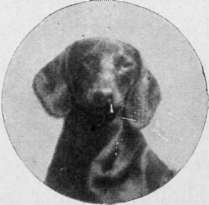

Rules Of The Basset Hound Club. Continued
Description
This section is from the book "Sporting Dogs. Their Points And Management In Health, And Disease", by Frank Townend Barton. Also available from Amazon: Sporting Dogs; Their Points and Management in Health and Disease.
Rules Of The Basset Hound Club. Continued
20. That every Member bring to the notice of the Club Committee any apparent dishonesty at Dog Shows, etc, against which the Club may publish a formal protest.
21. That the Club shall, if possible, hold a special Basset-hound Exhibition, at least once in each year, either confined to members of the Club, or open, as the Committee or Sub-Committee may determine. That the judges at this exhibition be appointed solely by the Club, and that the dogs be judged according to the standard of excellence as defined by the Club.
22. That at other shows, not held or managed by the Club, prizes, cups, or certificates of merit may be provided by the Club for the competition in Basset-hound classes, where these classes are judged by judges appointed or approved by the Club, and according to the standard of excellence adopted by the Club.
23. That a list of Members competent and willing to act as judges of Basset-hounds be annually made by the Committee or Sub-Committee, and the Secretary shall, on the application of the Committee, Secretary, etc., of any Dog Show, send a copy of such list, and arrange with the gentlemen chosen to act as judges at such show; the expenses to be borne by the show at which the judges officiate.
24. That the judges shall not exhibit at, or be interested either directly or indirectly in, any show at which they officiate.
25. That at all shows at which the Club offers prizes or cups, the name of the judge shall be, prior to the date of closing of the entries for such show, submitted to the Secretary of the Club, for the approval of the Committee.
26. That Members may vote by proxy at the General Meeting, such proxies to be sent to the Secretary or Treasurer at least forty-eight hours before the time of Meeting.
27. In the above Rules the word "dog" shall mean both sexes.
28. That the payment of his Subscription by any Member shall imply his full acquiescence in the above Rules.
Points Of Basset Hound (Smooth)
Head, skull, eyes, muzzle, and flews | . 15 |
Ears . . | . 15 |
Neck, dewlap, chest and shoulders . | . 10 |
Forelegs and feet | . 15 |
Back, loins and hind-quarters | . 10 |
Stern ..... | 5 |
Coat and skin | . 10 |
colour and markings | . 15 |
" Basset character " and symmetry . | 5 |
Total . | . 100 |
General Appearance
1. To begin with, the head is the most distinguishing part of all breeds. The head of the Basset-hound is most perfect when it closest resembles a Bloodhound's. It is long and narrow, with heavy flews, occiput prominent, " la bosse de la chasse," and forehead wrinkled to the eyes, which should be kind, and show the haw. The general appearance of the head must present high breeding and reposeful dignity; the teeth are small, and the upper jaw sometimes protrudes. This is not a fault, and is called the " bec de lievre".
2. The ears are very long, and when drawn forward folding well over the nose—so long, that in hunting they will often actually tread on them ; they are set on low, and hang loose in folds like drapery, the ends inward curling, in texture thin and velvety.
3. The neck is powerful, with heavy dewlaps. Elbows must not turn out. The chest is deep, full, and framed like a "man-of-war." Body long and low.
4. Forelegs short, about 4 inches, and close-fitting to the chest till the crooked knee, from where the wrinkled ankle ends in a massive paw, each toe standing out distinctly.
5. The stifles are bent, and the quarters full of muscle, which stands out, so that when one looks at the dog from behind it gives him a round barrel-like effect. This, with their peculiar waddling gait, goes a long way towards Basset character—a quality easily recognised by the judge, and as desirable as Terrier character in a Terrier.
6. The stern is coarse underneath, and carried Hound-fashion.
7. The coat is short, smooth and fine, and has a gloss on it like that of a racehorse. (To get this appearance, they should be hound-gloved, never brushed,) Skin loose and elastic.
8. The colour should be black, white and tan; the head, shoulders, and quarters a rich tan, and black patches on the back. They are also sometimes hare-pied.
Points Of The Basset Hound (Rough)
Head and ears | . 20 |
Body, including hind-quarters | . 35 |
Legs and feet | . 20 |
Coat ..... | . 15 |
" Basset character," etc. | . 10 |
Total | . 100 |
General Appearance
1. The head should be large, the skull narrow but of good length, the peak well developed. The muzzle should be strong, and the jaws long and powerful: a snipy muzzle and weakness of jaw are objectionable. The eyes should be dark and not prominent. The ears should be set on low, of good length and fine texture.
2. The neck should be strong, of good length and muscular, set on sloping shoulders.
3. The body should be massive, of good length and well ribbed up, any weakness or slackness of loin being a bad fault. The chest should be large and very deep, the sternum prominent.
4. The forelegs should be short and very powerful, very heavy in bone, either half-crooked or nearly straight. The elbows should lie against the sides of the chest, and should not turn out.
5. Hind-quarters should be powerful and muscular, the hind-legs should be rather longer than the forelegs, and should be well bent at the stifles.
6. Stern of moderate length and carried gaily, should be set on high.
7. Coat
An extremely important point. It-should be profuse, thick and harsh to the touch, with a dense undercoat. The coat may be wavy.
8. Colour
Any recognised Hound colour.
9. Weight
Dogs, from 40 to 50 lbs., bitches rather less.
The Rough Basset should appear a very powerful Hound for his size, on short, strong legs. Body massive and a good length, without slackness of loin. The feet should be thick, well padded and not open. The expression should be kindly and intelligent. Any unsoundness should disqualify the Hound.

Continue to:
- prev: Rules Of The Basset Hound Club
- Table of Contents
- next: Section E. Fox Terriers. Chapter XII. The Fox Terrier